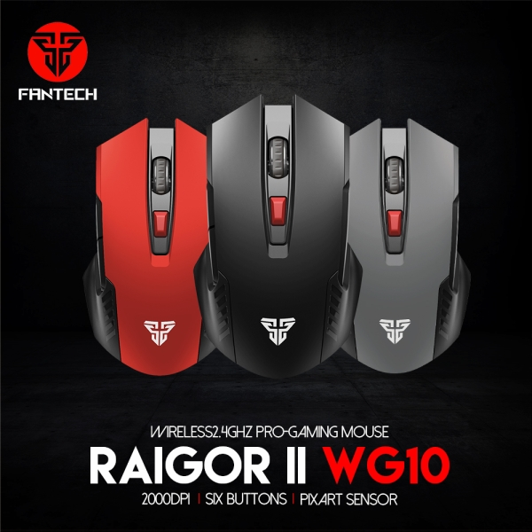
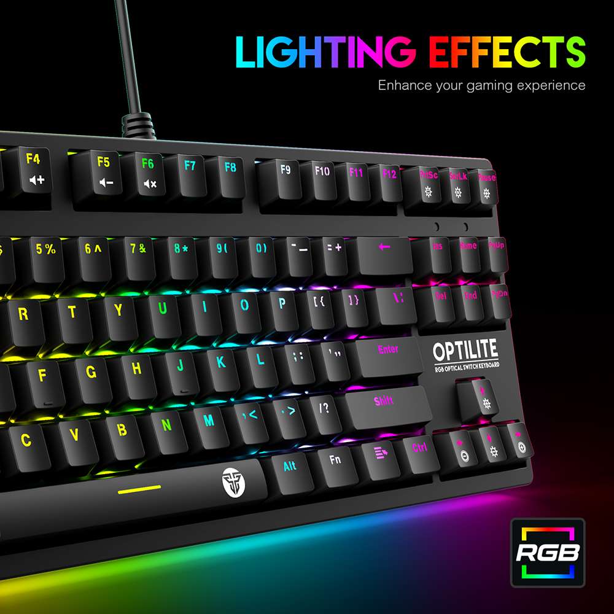
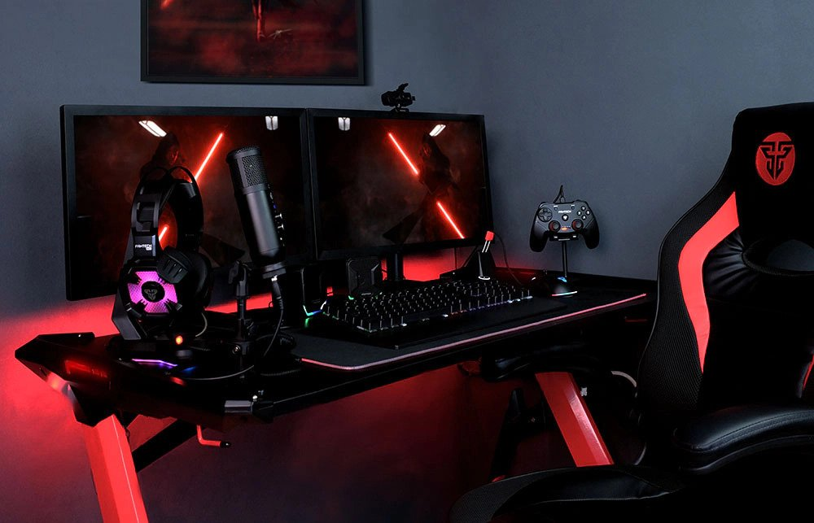

|  | Know More about Functions of DPIApril 4, 2022| Fantech Nepal|views 3599 For you gamers, you may already be familiar with the DPI Mouse. This tool has functions that are quite important to operating the mouse. What exactly is DPI? And what does it do? Why do we need to know the DPI function on the mouse? See the explanation in the following article |
|  | Best Mechanical Keyboard for Gaming in NepalApril 4, 2022| Fantech Nepal|views 2881 Today, mechanical keyboards are the most preferred devices for video game lovers. However, is this type of mechanical keyboard the right keyboard for them? For everyone who is thinking about buying a mechanical keyboard, they can search the internet for recommendations and reviews on the best mechanical keyboard for you. This type of mechanical keyboard also has various advantages and disadvantages with the type of mechanism and technology it has in its design. |
|  | Tricks for Choosing a Quality Gaming Laptop DeskMarch 9, 2022| Fantech Nepal|views 2715 Choosing the best gaming table is not easy. For those of you who have never bought a gaming laptop table before, it may be quite difficult to get a quality one. However, don't worry because this article will review how to get a cheap and quality gaming table. In addition to being comfortable, a table with the best quality will also not damage your eyes while playing games. |
email:samod23@tbc.edu.np
Balaju,Kathmandu,Nepal